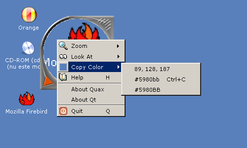

Claudiu Costin <claudiuc@kde.org>
Quax skin designer: Vlad Oancea
Revision 0.1.0
Copyright © 2001, 2002, 2003 Claudiu Costin
This handbook describes Quax, a neat desktop magnifying tool for web developers and graphic artists. It's also good for short sighted people.
Table of Contents
Quax is a desktop zooming tool intended especially for web developers, but is very handy and friendly for newbies. There are few other tools for this task: XMag, KMag and KZoom. All of them are full featured applications and take some time to figure how to use them. On the other side, Quax is very easy to use and have an appealing user interface.
You can visit the Quax web site at http://www.ro.kde.org/quax/.
Quax view on the KDE desktop
Quax can be used both by mouse and keyboard. While mouse may be an intuitive usage for regular users, the keyboard usage is a plus which speed up the work for professionals in web and graphics computer field. In the circular display area it zoom a rectangular region pointed by it's red arrow.
Quax can be freely moved on the desktop surface by simply dragging it. Press down the left mouse button mouse button and start moving the mouse. When you positioned it to part of screen desired, release the mouse button. For precise positioning you can use cursor keys to move it pixel by pixel to desired direction. If you keep Shift key pressed down while using cursor keys, the it is moved with 10 pixels steps.
Quax can be moved freely over desktop
Because Quax zoom on bottom-left region, there are desktop places which cannot be reached in default appearance: top-left corner, top-right corner, bottom-right corner, top margin and right margin. This problem is resolved by changing the direction where Quax "look at" and is made by rotating it. The left rotation and right rotation can be performed in three ways. If you use mouse extensively and your mouse have wheel, then press down Ctrl key and move mouse wheel. Moving wheel forward will rotate Quax to counter-clockwise (to left). Move wheel backward and Quax will rotate clockwise (to right). If your mouse don't have wheel or is not activated for use, then you can still use the menus. Press right mouse button mouse button and Quax menu will show up. Then choose Look At->Rotate Right or Look At->Rotate Left menu items. The fastest way to rotate Quax is using keyboard. Press L for left rotation and R for right rotation.
Rotating Quax many times back and forward can be time consuming when it is used extensively. For that reason, there are keyboard shortcuts and menu items which will point Quax to desired direction: north-east, north-west, south-east, and south-west. See the Keyboard operations section.
Quax can be rotated left or right
The main function of Quax is to enlarge regions of your desktop. You cam choose between 5 zoom levels. The zoom in and zoom out can be performed in three ways. If you use mouse extensively and your mouse have wheel, then move mouse wheel. Moving wheel forward will increase the zoom. Move wheel backward and Quax will decrease the zoom. If your mouse don't have wheel or is not activated for use, then you can still use the menus. Press right mouse button mouse button and Quax menu will show up. Then choose Zoom->Zoom In or Zoom->Zoom Out menu items. The fastest way to change zoom level is to use keyboard. Press - (minus) for zoom out and = (equal) for zoom in. Alternatively you may want to use _ (underscore) and + (plus).
Desktop regions can be zoomed in and out
Many times a web developer see a color which should in be used in HTML pages which he is working at. The colors are easily spotted when desktop area is enlarged as happen with Quax. There are some applications which can pick any color on desktop, but these operate at pixel level so will be very hard to pick right color when details on screen are high or there are many similar colors around desired color. You have three methods to pick a color: using Quax menu, using color tool tip and using keyboard shortcut.
Whenever you press right mouse button mouse button, the color picker function is activated. This way, right before Quax menu is shown, the color at mouse cursor position is picked. The Color menu item will associated icon as a square colored with color taken at mouse cursor. The Color submenu contain three items which display the current color in different representation: comma separate decimal numbers, HTML hexadecimal with lowercase letters and HTML hexadecimal with uppercase letters. When you select one of these items, the color text representation is copied to system clipboard.
The second method use the mouse and is more versatile. To activate it press down Ctrl and Shift modifier keys. Mouse cursor will change as "crosshair" and a tool tip will be shown near the cursor. The tool tip contain a square colored as current color under cursor and a color text as HTML hexadecimal representation. You can freely move the mouse to see other colors in Quax area. When your happy with color under mouse cursor, press the left mouse button mouse button. The cursor will change for short time as "resize" cursor and lowercase hexadecimal representation of color is copied to system clipboard.
When you use first method there's a chance that you may inadvertently move the mouse position because you press right mouse button mouse button. If you only need to get the HTML lowercase hexadecimal representation of color, then you may press Ctrl+C to copy the color under mouse cursor to system clipboard.

Picking a color from Quax area
Quax use many keyboard shortcuts to speed up user experience as much as possible. For casual users there's popup menu which show up when you right click on Quax surface.
- (Cursor keys)
Quax move pixel by pixel in cursor key direction
- (Shift+Cursor keys)
Quax move with 10 pixels step in cursor key direction
- Zoom->Zoom In (=), Zoom->Zoom In (+)
Increase zoom level
- Zoom->Zoom Out (-), Zoom->Zoom Out (_)
Decrease zoom level
- Look At->Rotate Right (R)
Rotate Quax to right
- Look At->Rotate Left (L)
Rotate Quax to left
- Look At->North-West (U)
Rotate Quax to zoom at North-West
- Look At->South-West (J)
Rotate Quax to zoom at South-West
- Look At->North-East (I)
Rotate Quax to zoom at North-East
- Look At->South-East (K)
Rotate Quax to zoom at South-East
- Copy Color->color (Ctrl+C)
Copy the color at the mouse (pointer) current position
- Help (H)
Open the help window
- Quit (Q)
Quit Quax
Many operations can be made with mouse. Some of them, only with the mouse.
- Zoom
Simply rotating mouse wheel will change zoom level in or out. Move the wheel forward and zoom level increase. Move the wheel back and zoom level will decrease.
- Rotate
If you keep pressed down Ctrl key and rotate the wheel, then Quax will rotate as well. Move the wheel forward and Quax will rotate counter-clockwise. Move the wheel back and Quax will rotate clockwise.
- Move
To move it click with the left mouse button mouse button on the Quax surface and then drag. When you get it where you want, release the mouse button.
- Operations menu
right mouse button click on the Quax surface and while keeping mouse button pressed down, select a menu item and then release the mouse button. Observe the shortcut combinations on the right side of item menu name.
- Color Tool Tip
To pick up the color for magnified pixels, keep Ctrl and Shift buttons pressed down. Mouse cursor will change to "cross hair" cursor shape. A tool tip will popup at the mouse cursor which display a colored square and hexadecimal web representation for color. The tool tip follow the mouse cursor when you move it as long you keep Ctrl and Shift down and pointer is inside Quax. If you press the left mouse button mouse button, the current color is copied into clipboard using HTML hexadecimal format with lowercase letters. For a short time (click duration) mouse will change to "size all" cursor shape.
- Zoom
Open the Zoom submenu where you can directly choose zoom levels or increase/decrease the current zoom level.
- Look At
Open the Look At submenu where you can choose direction where Quax look at to zoom.
- Copy Color
Open the Color submenu where you can choose what text color will be copied to system clipboard.
- Help (H)
Show the Quax documentation.
- About Quax
Display an message box with information about Quax version, license, and authors.
- About Qt
Display an message box with information about Qt version, and license.
- Quit (Q)
Quit Quax application.
Quax main menu
- Zoom->1:2
Set zoom level to 1:2.
- Zoom->1:3
Set zoom level to 1:3.
- Zoom->1:4
Set zoom level to 1:4.
- Zoom->1:5
Set zoom level to 1:5.
- Zoom->Zoom In (+)
Increase zoom level
- Zoom->Zoom Out (-)
Decrease zoom level
Quax zoom menu
- Look At->North-West (U)
Rotate Quax to zoom at North-West
- Look At->South-West (J)
Rotate Quax to zoom at South-West
- Look At->North-East (I)
Rotate Quax to zoom at North-East
- Look At->South-East (K)
Rotate Quax to zoom at South-East
- Look At->Rotate Right (R)
Rotate Quax to right
- Look At->Rotate Left (L)
Rotate Quax to left
Quax look menu
Here you have three menu items. When you select one of them, the text shown on menu item label is copied to system clipboard. That way you can pick the color under mouse cursor and make the text representing color available to other applications, usually HTML editors.

Quax Copy Color menu
Quax
Program copyright 2003 Claudiu Costin <claudiuc@kde.org>
Documentation copyright 2003 Claudiu Costin <claudiuc@kde.org>
Special thanks for Vlad Oancea <xtrim@fx.ro> who made the Quax skin.
Special thanks for my wife, Iuliana Costin, who allowed me to spend countless hours to work on Linux and KDE.
Icons are borrowed from KDE Project.
This documentation is licensed under the terms of the GNU Free Documentation License.
This application is licensed under the terms of the GNU General Public License.
Quax web site is hosted on SourceForge servers and can be reached at: http://www.ro.kde.org/quax/
Source code and binaries distributions can be downloaded from: http://www.ro.kde.org/quax/download.html
Because Quax is a 100% Qt application. It can be compiled on any platform where Qt was ported. At the moment it is supported out-of-the-box with scripts and conditional compiling to the following platforms:
Linux with Qt 3.x GPL or better
Windows with QT 2.3 for Non-Commercial-Use
For Linux you need to have GNU C++ compiler and associated tools. To regenerate the user documentation you need to have meinproc from KDE 3.1. To regenerate the reference documentation from source code you need to have Doxygen.
To compile Quax under Windows you need Microsoft? Visual Studio? 6.0 and Qt 2.3 for Windows for Non-Commercial-Use.
Compile and install with the usual:
% ./configure % make % make install
Last command must be run as root user.
GNU Free Documentation License
Version 1.1, March 2000
Copyright (C) 2000 Free Software Foundation, Inc.
59 Temple Place, Suite 330, Boston, MA 02111-1307 USA
Everyone is permitted to copy and distribute verbatim copies
of this license document, but changing it is not allowed.
0. PREAMBLE
The purpose of this License is to make a manual, textbook, or other
written document "free" in the sense of freedom: to assure everyone
the effective freedom to copy and redistribute it, with or without
modifying it, either commercially or noncommercially. Secondarily,
this License preserves for the author and publisher a way to get
credit for their work, while not being considered responsible for
modifications made by others.
This License is a kind of "copyleft", which means that derivative
works of the document must themselves be free in the same sense. It
complements the GNU General Public License, which is a copyleft
license designed for free software.
We have designed this License in order to use it for manuals for free
software, because free software needs free documentation: a free
program should come with manuals providing the same freedoms that the
software does. But this License is not limited to software manuals;
it can be used for any textual work, regardless of subject matter or
whether it is published as a printed book. We recommend this License
principally for works whose purpose is instruction or reference.
1. APPLICABILITY AND DEFINITIONS
This License applies to any manual or other work that contains a
notice placed by the copyright holder saying it can be distributed
under the terms of this License. The "Document", below, refers to any
such manual or work. Any member of the public is a licensee, and is
addressed as "you".
A "Modified Version" of the Document means any work containing the
Document or a portion of it, either copied verbatim, or with
modifications and/or translated into another language.
A "Secondary Section" is a named appendix or a front-matter section of
the Document that deals exclusively with the relationship of the
publishers or authors of the Document to the Document's overall subject
(or to related matters) and contains nothing that could fall directly
within that overall subject. (For example, if the Document is in part a
textbook of mathematics, a Secondary Section may not explain any
mathematics.) The relationship could be a matter of historical
connection with the subject or with related matters, or of legal,
commercial, philosophical, ethical or political position regarding
them.
The "Invariant Sections" are certain Secondary Sections whose titles
are designated, as being those of Invariant Sections, in the notice
that says that the Document is released under this License.
The "Cover Texts" are certain short passages of text that are listed,
as Front-Cover Texts or Back-Cover Texts, in the notice that says that
the Document is released under this License.
A "Transparent" copy of the Document means a machine-readable copy,
represented in a format whose specification is available to the
general public, whose contents can be viewed and edited directly and
straightforwardly with generic text editors or (for images composed of
pixels) generic paint programs or (for drawings) some widely available
drawing editor, and that is suitable for input to text formatters or
for automatic translation to a variety of formats suitable for input
to text formatters. A copy made in an otherwise Transparent file
format whose markup has been designed to thwart or discourage
subsequent modification by readers is not Transparent. A copy that is
not "Transparent" is called "Opaque".
Examples of suitable formats for Transparent copies include plain
ASCII without markup, Texinfo input format, LaTeX input format, SGML
or XML using a publicly available DTD, and standard-conforming simple
HTML designed for human modification. Opaque formats include
PostScript, PDF, proprietary formats that can be read and edited only
by proprietary word processors, SGML or XML for which the DTD and/or
processing tools are not generally available, and the
machine-generated HTML produced by some word processors for output
purposes only.
The "Title Page" means, for a printed book, the title page itself,
plus such following pages as are needed to hold, legibly, the material
this License requires to appear in the title page. For works in
formats which do not have any title page as such, "Title Page" means
the text near the most prominent appearance of the work's title,
preceding the beginning of the body of the text.
2. VERBATIM COPYING
You may copy and distribute the Document in any medium, either
commercially or noncommercially, provided that this License, the
copyright notices, and the license notice saying this License applies
to the Document are reproduced in all copies, and that you add no other
conditions whatsoever to those of this License. You may not use
technical measures to obstruct or control the reading or further
copying of the copies you make or distribute. However, you may accept
compensation in exchange for copies. If you distribute a large enough
number of copies you must also follow the conditions in section 3.
You may also lend copies, under the same conditions stated above, and
you may publicly display copies.
3. COPYING IN QUANTITY
If you publish printed copies of the Document numbering more than 100,
and the Document's license notice requires Cover Texts, you must enclose
the copies in covers that carry, clearly and legibly, all these Cover
Texts: Front-Cover Texts on the front cover, and Back-Cover Texts on
the back cover. Both covers must also clearly and legibly identify
you as the publisher of these copies. The front cover must present
the full title with all words of the title equally prominent and
visible. You may add other material on the covers in addition.
Copying with changes limited to the covers, as long as they preserve
the title of the Document and satisfy these conditions, can be treated
as verbatim copying in other respects.
If the required texts for either cover are too voluminous to fit
legibly, you should put the first ones listed (as many as fit
reasonably) on the actual cover, and continue the rest onto adjacent
pages.
If you publish or distribute Opaque copies of the Document numbering
more than 100, you must either include a machine-readable Transparent
copy along with each Opaque copy, or state in or with each Opaque copy
a publicly-accessible computer-network location containing a complete
Transparent copy of the Document, free of added material, which the
general network-using public has access to download anonymously at no
charge using public-standard network protocols. If you use the latter
option, you must take reasonably prudent steps, when you begin
distribution of Opaque copies in quantity, to ensure that this
Transparent copy will remain thus accessible at the stated location
until at least one year after the last time you distribute an Opaque
copy (directly or through your agents or retailers) of that edition to
the public.
It is requested, but not required, that you contact the authors of the
Document well before redistributing any large number of copies, to give
them a chance to provide you with an updated version of the Document.
4. MODIFICATIONS
You may copy and distribute a Modified Version of the Document under
the conditions of sections 2 and 3 above, provided that you release
the Modified Version under precisely this License, with the Modified
Version filling the role of the Document, thus licensing distribution
and modification of the Modified Version to whoever possesses a copy
of it. In addition, you must do these things in the Modified Version:
A. Use in the Title Page (and on the covers, if any) a title distinct
from that of the Document, and from those of previous versions
(which should, if there were any, be listed in the History section
of the Document). You may use the same title as a previous version
if the original publisher of that version gives permission.
B. List on the Title Page, as authors, one or more persons or entities
responsible for authorship of the modifications in the Modified
Version, together with at least five of the principal authors of the
Document (all of its principal authors, if it has less than five).
C. State on the Title page the name of the publisher of the
Modified Version, as the publisher.
D. Preserve all the copyright notices of the Document.
E. Add an appropriate copyright notice for your modifications
adjacent to the other copyright notices.
F. Include, immediately after the copyright notices, a license notice
giving the public permission to use the Modified Version under the
terms of this License, in the form shown in the Addendum below.
G. Preserve in that license notice the full lists of Invariant Sections
and required Cover Texts given in the Document's license notice.
H. Include an unaltered copy of this License.
I. Preserve the section entitled "History", and its title, and add to
it an item stating at least the title, year, new authors, and
publisher of the Modified Version as given on the Title Page. If
there is no section entitled "History" in the Document, create one
stating the title, year, authors, and publisher of the Document as
given on its Title Page, then add an item describing the Modified
Version as stated in the previous sentence.
J. Preserve the network location, if any, given in the Document for
public access to a Transparent copy of the Document, and likewise
the network locations given in the Document for previous versions
it was based on. These may be placed in the "History" section.
You may omit a network location for a work that was published at
least four years before the Document itself, or if the original
publisher of the version it refers to gives permission.
K. In any section entitled "Acknowledgements" or "Dedications",
preserve the section's title, and preserve in the section all the
substance and tone of each of the contributor acknowledgements
and/or dedications given therein.
L. Preserve all the Invariant Sections of the Document,
unaltered in their text and in their titles. Section numbers
or the equivalent are not considered part of the section titles.
M. Delete any section entitled "Endorsements". Such a section
may not be included in the Modified Version.
N. Do not retitle any existing section as "Endorsements"
or to conflict in title with any Invariant Section.
If the Modified Version includes new front-matter sections or
appendices that qualify as Secondary Sections and contain no material
copied from the Document, you may at your option designate some or all
of these sections as invariant. To do this, add their titles to the
list of Invariant Sections in the Modified Version's license notice.
These titles must be distinct from any other section titles.
You may add a section entitled "Endorsements", provided it contains
nothing but endorsements of your Modified Version by various
parties--for example, statements of peer review or that the text has
been approved by an organization as the authoritative definition of a
standard.
You may add a passage of up to five words as a Front-Cover Text, and a
passage of up to 25 words as a Back-Cover Text, to the end of the list
of Cover Texts in the Modified Version. Only one passage of
Front-Cover Text and one of Back-Cover Text may be added by (or
through arrangements made by) any one entity. If the Document already
includes a cover text for the same cover, previously added by you or
by arrangement made by the same entity you are acting on behalf of,
you may not add another; but you may replace the old one, on explicit
permission from the previous publisher that added the old one.
The author(s) and publisher(s) of the Document do not by this License
give permission to use their names for publicity for or to assert or
imply endorsement of any Modified Version.
5. COMBINING DOCUMENTS
You may combine the Document with other documents released under this
License, under the terms defined in section 4 above for modified
versions, provided that you include in the combination all of the
Invariant Sections of all of the original documents, unmodified, and
list them all as Invariant Sections of your combined work in its
license notice.
The combined work need only contain one copy of this License, and
multiple identical Invariant Sections may be replaced with a single
copy. If there are multiple Invariant Sections with the same name but
different contents, make the title of each such section unique by
adding at the end of it, in parentheses, the name of the original
author or publisher of that section if known, or else a unique number.
Make the same adjustment to the section titles in the list of
Invariant Sections in the license notice of the combined work.
In the combination, you must combine any sections entitled "History"
in the various original documents, forming one section entitled
"History"; likewise combine any sections entitled "Acknowledgements",
and any sections entitled "Dedications". You must delete all sections
entitled "Endorsements."
6. COLLECTIONS OF DOCUMENTS
You may make a collection consisting of the Document and other documents
released under this License, and replace the individual copies of this
License in the various documents with a single copy that is included in
the collection, provided that you follow the rules of this License for
verbatim copying of each of the documents in all other respects.
You may extract a single document from such a collection, and distribute
it individually under this License, provided you insert a copy of this
License into the extracted document, and follow this License in all
other respects regarding verbatim copying of that document.
7. AGGREGATION WITH INDEPENDENT WORKS
A compilation of the Document or its derivatives with other separate
and independent documents or works, in or on a volume of a storage or
distribution medium, does not as a whole count as a Modified Version
of the Document, provided no compilation copyright is claimed for the
compilation. Such a compilation is called an "aggregate", and this
License does not apply to the other self-contained works thus compiled
with the Document, on account of their being thus compiled, if they
are not themselves derivative works of the Document.
If the Cover Text requirement of section 3 is applicable to these
copies of the Document, then if the Document is less than one quarter
of the entire aggregate, the Document's Cover Texts may be placed on
covers that surround only the Document within the aggregate.
Otherwise they must appear on covers around the whole aggregate.
8. TRANSLATION
Translation is considered a kind of modification, so you may
distribute translations of the Document under the terms of section 4.
Replacing Invariant Sections with translations requires special
permission from their copyright holders, but you may include
translations of some or all Invariant Sections in addition to the
original versions of these Invariant Sections. You may include a
translation of this License provided that you also include the
original English version of this License. In case of a disagreement
between the translation and the original English version of this
License, the original English version will prevail.
9. TERMINATION
You may not copy, modify, sublicense, or distribute the Document except
as expressly provided for under this License. Any other attempt to
copy, modify, sublicense or distribute the Document is void, and will
automatically terminate your rights under this License. However,
parties who have received copies, or rights, from you under this
License will not have their licenses terminated so long as such
parties remain in full compliance.
10. FUTURE REVISIONS OF THIS LICENSE
The Free Software Foundation may publish new, revised versions
of the GNU Free Documentation License from time to time. Such new
versions will be similar in spirit to the present version, but may
differ in detail to address new problems or concerns. See
http:///www.gnu.org/copyleft/.
Each version of the License is given a distinguishing version number.
If the Document specifies that a particular numbered version of this
License "or any later version" applies to it, you have the option of
following the terms and conditions either of that specified version or
of any later version that has been published (not as a draft) by the
Free Software Foundation. If the Document does not specify a version
number of this License, you may choose any version ever published (not
as a draft) by the Free Software Foundation.
ADDENDUM: How to use this License for your documents
To use this License in a document you have written, include a copy of
the License in the document and put the following copyright and
license notices just after the title page:
Copyright (c) YEAR YOUR NAME.
Permission is granted to copy, distribute and/or modify this document
under the terms of the GNU Free Documentation License, Version 1.1
or any later version published by the Free Software Foundation;
with the Invariant Sections being LIST THEIR TITLES, with the
Front-Cover Texts being LIST, and with the Back-Cover Texts being LIST.
A copy of the license is included in the section entitled "GNU
Free Documentation License".
If you have no Invariant Sections, write "with no Invariant Sections"
instead of saying which ones are invariant. If you have no
Front-Cover Texts, write "no Front-Cover Texts" instead of
"Front-Cover Texts being LIST"; likewise for Back-Cover Texts.
If your document contains nontrivial examples of program code, we
recommend releasing these examples in parallel under your choice of
free software license, such as the GNU General Public License,
to permit their use in free software.